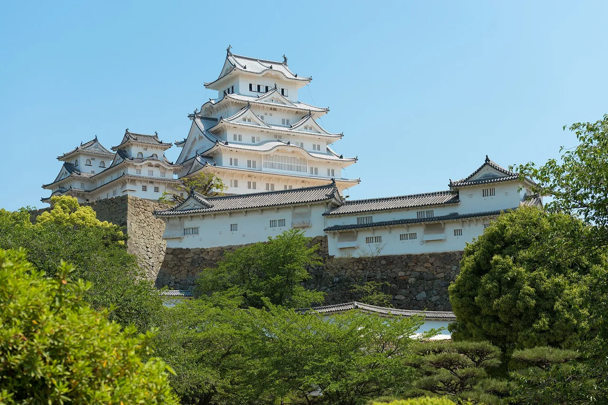

Hyogo Panduan Wisata untuk Pelajar Bahasa Jepang
Kastil terindah Jepang di Himeji dan kota pelabuhan Kobe.

Hyōgo membentang dari Laut Jepang hingga Laut Pedalaman. Kastil Himeji adalah benteng bersejarah terbaik yang masih bertahan di negara ini, dan Kobe yang kosmopolitan terkenal di seluruh dunia karena daging sapinya.
Yang wajib dilihat
- Himeji Castle (UNESCO)
- Pelabuhan Kobe dan Gunung Rokkō
- Arima Onsen
- Kota Kinosaki Onsen
Beberapa tautan di atas adalah tautan afiliasi. Kami mungkin mendapat komisi tanpa biaya tambahan bagi Anda. Kami hanya mencantumkan layanan yang kami pakai sendiri.
Yang wajib dicoba
Daging sapi Kobe dan gurita Akashi.
Cara ke sana & waktu terbaik
Cara ke sana: Kobe berjarak sekitar 30 menit dan Himeji sekitar 40 menit dari Osaka dengan kereta.
Waktu terbaik: Kapan saja; bunga sakura memperindah Kastil Himeji dengan indah di awal April.
Kastil Himeji adalah perjalanan sehari yang mudah dari Osaka atau Kyoto dengan shinkansen.
Beberapa tautan di atas adalah tautan afiliasi. Kami mungkin mendapat komisi tanpa biaya tambahan bagi Anda. Kami hanya mencantumkan layanan yang kami pakai sendiri.